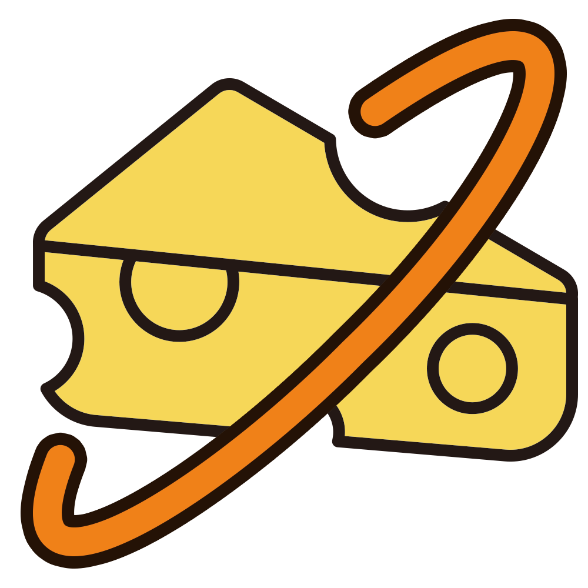

ON/OFF FACTORY,
ASG
번아웃 증후군을 미리 체험하여
번아웃 증후군에 대한 경각심을 갖게 하여 예방 할 수 있는 뉴미디어 프로젝트

20-BO
00-20
PROGRAMMING
VIDEO
DESIGN
MENU
00-20
ON/OFF FACTORY
번아웃 증후군을 예방하는 참여형 뉴미디어 프로젝트
#1
립모션을 사용하여 사용자의 손을 인식 합니다
인식된 손에 물리를 적용하여, 게임이 진행 되게 했습니다.
#2
상자를 손으로 쳐 색깔에 따라 분류 하고,
맞을 시에는 치즈를 얻게 됩니다.
#3
중간에 나오는 선택지에 버튼을 누를 시 쉴 수 있습니다.누르지 않을 시
번아웃 증후군의 증상이 나오며, 버튼을 누르는 수에 따라 엔딩이 달라지게 됩니다.